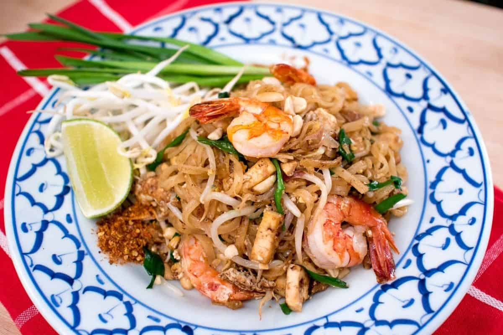

Pad Thai Recipe

If followed closely, here is how your Pad Thai will look
Ingredients
- Tamarind Paste
- Palm Sugar
- Fish Sauce
- Shallots
- Garlic
- Dried Shrimp
- Pressed Tofu
- Radish
- Chilli Flakes
- Eggs
- Peanutes
- Rice Noodles
- Bean Sprouts
- Garlic Chives
- Lime Wedge
Steps
- To make the sauce, melt and caramelize the palm sugar.
- Add water to stop the caramelization.
- Add fish sauce and tamarind and bring to a simmer.
- Off heat and let it sit until the sugar is completely dissolved.
- Cook off the shrimp (or any other protein you're using). Remove from pan.
- Saute shallots, garlic, tofu, dried shrimp, preserved radish, and chili flakes.
- Add the soaked noodles.
- Add the sauce.
- Toss until the noodles have absorbed all the sauce.
- Push the noodles to one side and add the eggs to the space you've made and break the yolks.
- Put the noodles on top of the eggs and let it cook for 15-30 seconds.
- Flip and toss to mix.
- Add the peanuts, bean sprouts and garlic chives.
- Turn off the heat and toss until the beansprouts are incorporated and slightly wilted.
- Plate and top with more peanuts and shrimp.
- Don't forget to add fresh lime before eating!